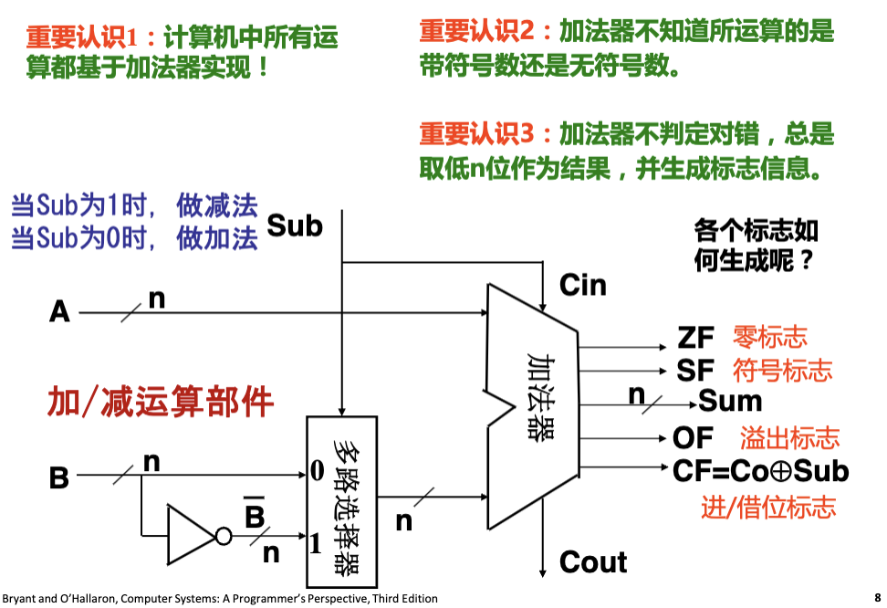
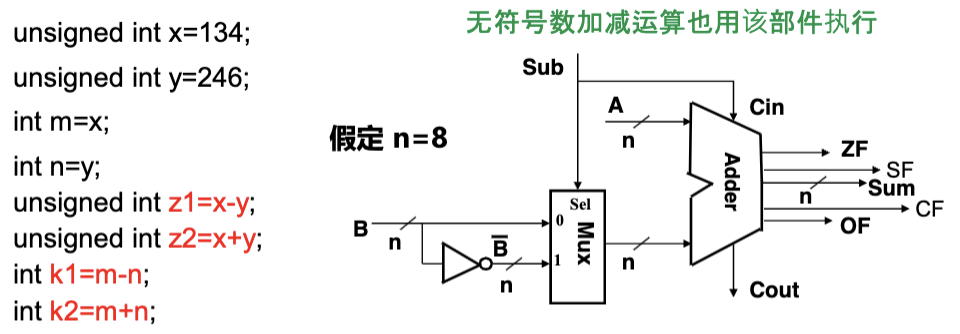
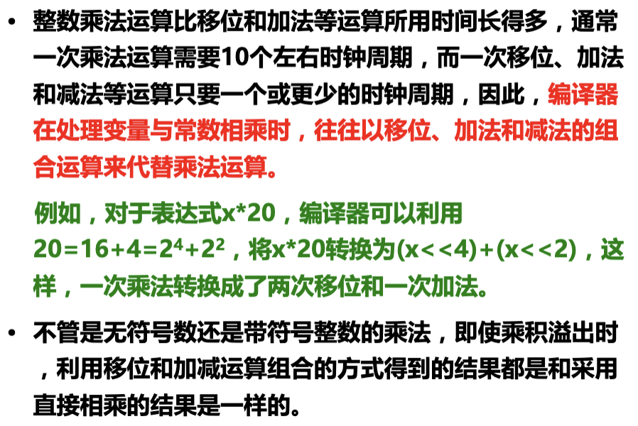
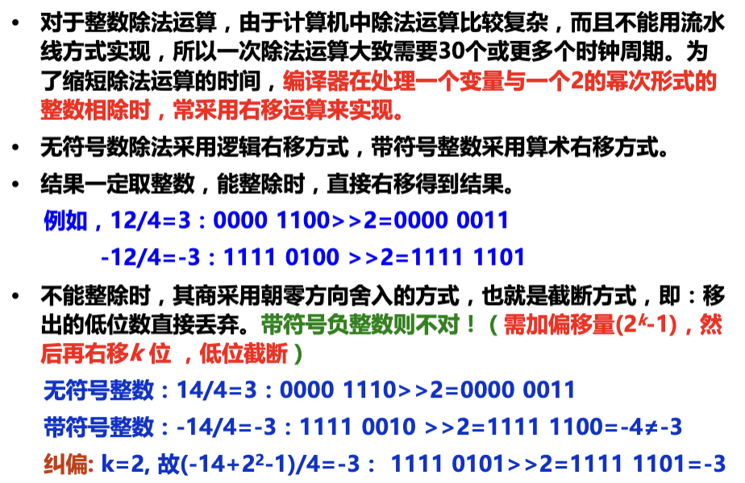

Addition加法
- 无符号数加法：$s = UAdd_w(u,v) = (u +v)\% 2^w$；结果寄存器会截断溢出的1位；
- 溢出时，结果一定小于任何一个加数；
- 有符号数加法：$s = (int)((unsigned)u + (unsigned)v)$；
- 正溢出：$x + y \ge 2^{w-1}$，截断后结果为$x + y - 2^w$；
- 负溢出：$x + y < 2^{w-1}$，截断后结果为$x + y + 2^w$；
- 正 + 负：不可能溢出；
- 用加法实现减法：$(A - B)_{\text{补}} = (A)_\text{补} + (-B)_\text{补}$
- 如何求$(-B)_\text{补}$
$(B)_\text{补} + (-B)_\text{补} = 11\cdots 1$ $\sim(B)_\text{补} + (B)_\text{补} + 1 = 11\cdots 1 + 1 = 0$ $(-B)_\text{补} = \sim (B)_\text{补} + 1$
- 如何求$(-B)_\text{补}$
- 加法逆元：
- 无符号数：$-x = 2^w - x(x \ne 0)$，0的逆元是0；
- 有符号数：$x + (-x) = 0$，注意特例$T_{min},10\cdots 0 + 10\cdots 0 = 0$，即$-T_{min} = T_{min}$；
Adder加法器

- 当做减法(Sub = 1)或产生进位(Co = 1)时，CF = 1，表示发生借位或进位；
- SF = 运算结果的符号位；
- ZF = 1 if Sum = 0；
- OF = 1 if 两个加数同号但与Sum异号(即上述发生溢出的情形)；

以上题为例：
```c
unsigned int x = 1000 0110;
unsigned int y = 1111 0110; // -y_补 = 00001010
int m = x = 1000 0110 = -122;
int n = y = 1111 0110 = -10;
CF = 1(减法有借位)，OF = 0(并没有溢出），SF = 1；
unsigned int z1 = x - y = 1000 0110 + 00001010 = 10010000 = 144;
int k1 = m - n = 10010000 = -112 = -112 - (-10);
CF = 1(有进位)，OF = 1(发生溢出)，SF = 0；
unsigned int z2 = x + y = 1000 0110 + 11110110 = 01111100 = 124 = (134 + 246) % 256;
int k2 = m + n = 01111100 = 124 = -122 - 10 + 256;
```
Multiplication
- 无符号数乘法：和加法类似进行截断；
- 补码乘法：先按无符号数进行乘法运算截断，然后将结果转化为有符号数；
- 变量与常数之间的乘运算（左移）：
- 变量与常数之间的除运算（算术右移）：
- 如果负数要向0取整，记得加偏移量；即：$x = (x + 1<